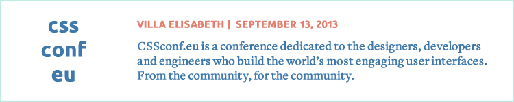

September will be a very exiting time for the Berlin web community. As have have various events happening during up.front week and lots of interesting people in town we prepared a very special event. Stay tuned.
We recommend checking out CSSconf, a conference dedicated to CSS and the designers, developers and engineers who build the world’s most engaging user interfaces.

We hope you can find some time to catch a few sun rays and have a beautiful summer. Make sure you are following our twitter account in case we are doing a small unofficial drinkup or picknick.
Tuesday, July 9th 2013, 7:30pm
We have one more speaker slot! Write us on twitter or send us an email if you have a design or frontend topic to discuss, or if you have a speaker to suggest.
It’s the summer edition of up.front! In the summer, many of us try to take some time off and maybe reflect on the things we do. We would like to pick up on that theme, with two personal talks, aimed to help us define ourselves as professionals, freelancers, designers or developers, and maybe as humans.
We hope this will spur a lot of discussion, and as usual, after the talks there’s time for conversations and tasty, discounted drinks at Lugosi.
Up.front is a free event, and you do not have to register anywhere. However it gets packed sometimes. Doors open at 7pm, talks do not start before 7:30pm. Come early to make sure you get a seat!
Follow us on Twitter for updates.
-
Sven Ellingen: Always be Building
Sven loves to start things. And then grow them. Ideas, things, projects, products, teams. And lately: a company — after 5 years at Edenspiekermann, he decided to start from scratch, on his own. This talk is about leaving something great behind to make room for something that’s even better. It’s essentially about the beauty of building things.
Sven is a designer bridging disciplines across business, design, and technology. Co-founder of @acolorbright. Previously: Creative Director at @edenspiekermann.
-
Kilian McMahon: Embracing what you're not
Kilian has spent the last couple of years fumbling around as a designer trying to figure out how to become the people he admired but to no avail. This talk is about getting away from the idea of fitting yourself to others, recognising that you don't work like everyone else and understanding that being different is so much better.
Kilian is a designer from Dublin who works on a ticketing app called Tito and a conference called Úll.
-
Fabian Mürmann: How not to get killed as a freelancer
Fabian spend nine years working as a freelance front- and back end, product / concept guy for a bunch of different, international, companies & startups.
In this talk he’ll share a few things that he learned on the way: Infos on how to deal with taxes, clients from hell, working remote, that kind of stuff.
Fabian is a Creative Technologist, working in the web since 16 years and currently co-managing an innovation lab at the Bertelsmann DirectGroup.
Tuesday, June 11th 2013, 7:30pm
Don’t miss our June meetup with talks by Karolina Szczur (@fox), Cath Richardson (@ohrworm) and Natalia Berdys (@batalia). Doors open at 7pm at co.up’s third floor. After the meet-up there’s time for conversations and tasty, discounted drinks at Lugosi.
Up.front is a free event, and you do not have to register anywhere. However it gets packed sometimes. Doors open at 7pm, talks do not start before 7:30pm. Come early to make sure you get a seat!
Follow us on Twitter for updates, and tell your friends on meetup.com and Facebook.
-
Karolina Szczur Designing with Color
“There’s more to color than a swatch in a book” – a wise man said once. Color is one of the most powerful, emotion evoking weapon in designer’s toolbelt, yet sometimes we fail to recognize its importance. From perception, psychological and cultural meaning of color to systems, optical illusions, usability restraints and useful tools.
Karolina is a designer and front-end developer. She worked with numerous startups, curated a lesson at Hack Design course and helps out as an editor at Smashing Mag.
-
Cath Richardson Embracing the mundane
Sometimes to make something amazing, you have to start with something boring. This talk is about embracing the mundane problems which surround us everyday. Thermostats, workflows, print infrastructure – we’ll look at how fundamentally dull, pedestrian things can turn into the most fascinating and rewarding design challenges.
A reformed Londoner, Cath moved to Berlin this year after 2 years working in service design and customer development at Made by Many. She now leads product at ezeep, a company changing the way the world prints.
-
Natalia Berdys The web experience in the autistic spectrum
Designing with cognitively-impaired users in mind can be very illuminative, leading to a broader understanding of the role of UX/UI design in general. In her talk, Natalia will focus on Asperger syndrome and high-functioning autism, the perceptual issues involved for such web audience, and how their web experience can be the most sensitive test of good design.
Natalia Berdys develops iOS apps, plays a lot of video games and gets high on information. She’s obsessively interested in language, numbers and hardware. Pinkish hair, oddball ideas.
Tuesday, May 14th 2013, 7:30pm
-
Paulo Zoom Words of Matter
Words are living things. We shape them with our collective usage, and we perceive them differently as we change. As people, they’re our interface with one another. And as designers, our most essential tool.
In this talk, Paulo will explore how words impact our interfaces, affect our users’ behavior, and have the power to surprise and delight, but also to annoy and frustrate.
Paulo designs websites. He’s working on The Manual and XOXO. That’s not his real name.
-
Hany Rizk UX & Product: How lean can you go?
F**k it, ship it they say — but does that also apply when you’re working on a completely new product? This talk will revolve around releasing a Minimal Viable Product and all the complications that come with it: How do you know when your MVP is ready, and is less really more?
Hany is a UX and Interaction Designer driven by minimalism, product strategy and bringing interaction beyond the screen. As a pianist with a passion for music, design, arts and humanities, Hany mixes those sources of inspiration with the technical challenges he faces to design intuitive and innovative solutions that are fun to use, shaken not stirred!
-
Daniel Mierzwinski Learning through goals
With 2 months left of a 7 months internship Daniel wondered: Did he learn what he wanted to learn? His answer was no. In this talk Daniel will give you an insight into how he decided to spend the last 2 months of his internship and maximized his learnings.
Daniel is a frontend developer with a passion for user experience and entrepreneurial business.
Tuesday, April 9th 2013, 7:30pm
At our April meetup, we had talks by Emma Rose Metcalfe, Tom O’Doherty and John Sebastian Hussey.
-
Emma Rose MetcalfeSocial Objects - the centre of our universe
Whether it’s photo sharing, loops or tweets, the social object reigns queen of the web. Starting with Jyri Engeström as our centre point I’ll walk through findings from our own development in seeking the balance between accessible and precious design around social objects. How can we design platforms that lower barriers to create objects with long term social value?
Emma Rose Metcalfe is a designer and co-founder of HowDo, a mobile platform where people capture, collect and share micro guides about the world around them. She heads up the product team and has a background in service and experience design.
-
Tom O’DohertyZombie video
We all know that video is changing the internet, but we don’t think very often about how the internet is changing video. A short talk about a moving target.
Tom is a freelance design and video person, originally from Ireland. He’s interested in design minimalism and succinct storytelling. And Japanese noise-rock.
-
John Sebastian HusseyWeb Performance as UX
The mobile web audience is now huge. Mobile devices accessing the web, typically over a 3G connection, should have a lightening fast experience. This talks focuses on why web performance is more important than ever with some quick and easy ways to make sites faster and lighter.
Full stack pancake engineer. Enthusiastic creative coder and web developer. Big hair, big ideas.
Tuesday, March 12th 2013, 7:30pm
Just like the first rays of spring sunlight after the long, drab Berlin winter, we too are finally reappearing in full force! Join us on March 12th for up.front 34, with a range of talks that could only be broader if it included something on hydroponics or dinosaurs.
After the meet-up we’re heading to Lugosi (Reichenberger Straße 152), our favourite moody hideout, for casual lounging and tasty, discounted drinks.
-
Natalie HankeIntroducing Hexels, a new kind of art tool
Developed by Hex-Ray Studios, Hexels is a new grid-based art program for Mac and PC, which allows you to paint with shapes. Since it launched a few days ago, this short talk will show you Hexels in action, provide some examples of already existing funky artwork and give some information on the two awesome guys behind it.
Natalie is a freelance graphic designer who drinks a lot of coffee.
-
Alex FeyerkeHoodie - Building complete webapps without a backend
A short presentation of a new app architecture for front-end people, and how you can use it to build web apps without worrying about the backend.
Alex is a freelance web developer and internet generalist, and also one of the organizers of up.front.
-
Momme FundaLegal issues for web workers
A quick run-through of various relevant aspects of German internet law, covering topics like imprints, coding in order to avoid copyright violations, “Abmahnungen”, contracts with clients and employers and copyright laws.
Momme is a freelance lawyer specializing on media law. He works in a law firm made up of various other freelance lawyers, and he won’t be wearing a suit.
Tuesday, February 12th 2013, 7:30pm
Let’s get together!
We will have a little get together at Lugosi (Reichenberger Straße 152) for casual lounging and tasty, discounted drinks. Join us to discuss the latest news or talk about your ideas.
Tuesday, January 8th 2013, 7:30pm
Happy New Year everybody! Up.front will kick off 2013 with a panel discussion, starting on Tuesday, January 8, 7:30 pm at our favourite coworking space co.up.
Follow us on Twitter for updates and RSVP on Facebook.
-
Skeumorphic Mess vs the Boring Flatlands: What’s a “Digitally Native User Interface”?
Over the past years, we’ve witnessed a constant debate about competing trends in our field: Mimicking real world objects in user interfaces versus a revived flat approach, which the proponents label as more content-focused, digitally native and even honest.
It’s time to put this into perspective. Is there more to this new flat trend than just a different level of polish and angry designer youth re-discovering modernism? How can a user interface be native and honest in the first place?
We’ll look at different approaches and whether they’re relevant. To get a broader contexts of terms used in the discussion, we’ll not only discuss interaction design and usability, but also will have a look at art history and architecture.
After the meetup we’re heading to Lugosi (Reichenberger Straße 152) for casual lounging and tasty, discounted drinks, as usual. See you there!
» See archive for previous events